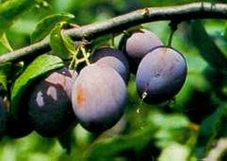

Szilvamoly
Grapholitha funebrana
A szilvagyümölcsök belsejének rágásával okoz kárt. Háromnemzedékes, a telet kifejlett lárva alakban tölti. Az első nemzedék lepkéi május - június folyamán, a későbbi nemzedékek a nyár második felében reülnek. A nőstények petéikat többnyire a gyümölcs alsó harmadára helyezik. A fiatal lárva egy ideig a gyümölcs felületén mászkál, befurakodásra alkalmas helyet keresve. A gyümölcsben egy, esetleg két lárva is előfordulhat. Jelenlétükre már a zöld gyümölcsök esetén is felfigyelhetünk, mivel a behatolási nyílásból gyér mézgaváladék szivárog. A fertőzött gyümölcsök gyakran lehullanak. A fán maradt ferőzött szilvák "színesedése" korábban kezdődik, jelezve, hogy a gyümölcs kényszerérésben van. Elhanyagolt szilvásban a kártétel az 50%-ot is meghaladhatja. Védekezésre a lárvakelések, vagy az azt megelőző időszak a legalkalmasabb. A lepkék rajzását szexuálatraktáns csapdákkal követhetjük nyomon. A védekezést a tömege rajzás után egy héten belül célszerű elkezdeni.
Védekezés:
- Inszekticides permetezéssel.
Javasolt növényvédő szerek:
 Bi 58 EC
Bi 58 EC
 Anthio 33 EC
Anthio 33 EC
 Unifosz 50 EC
Unifosz 50 EC
 Malathion 50 EC
Malathion 50 EC
 Ultracid 40 WP
Ultracid 40 WP
 Wofatox Sp 30 (50 EC)
Wofatox Sp 30 (50 EC)
 Dimecron 50
Dimecron 50
 Phosdrin
Phosdrin